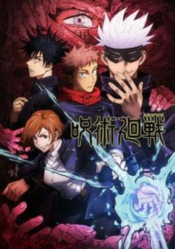
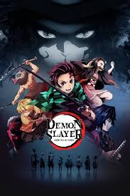
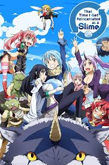
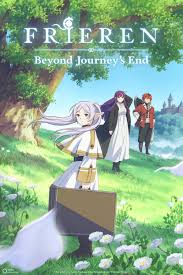
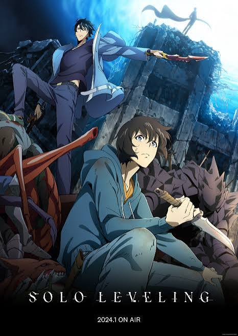

Attack on Titan
Humanity lives behind massive walls to escape man-eating giants, and when the walls are breached, a young man named Eren vows to destroy every Titan.
Current Watch Status: Completed
Humanity lives behind massive walls to escape man-eating giants, and when the walls are breached, a young man named Eren vows to destroy every Titan.
Current Watch Status: Completed

After swallowing a cursed object to save his friends, high schooler Yuji Itadori joins a school of sorcerers who battle deadly curses.
Current Watch Status: Caught Up

After his family is slaughtered by demons and his sister is turned into one, Tanjiro Kamado trains to become a demon slayer and find a cure for her.
Current Watch Status: Caught Up

A man who dies and is reborn as a slime in a fantasy world gains powerful abilities and gradually builds a nation of monsters.
Current Watch Status: In-Progress

After her party defeats the Demon King, the long-lived elf mage Frieren sets out on a new journey to understand the humans she failed to appreciate while they were alive.
Current Watch Status: Caught Up

A young man discovers a hidden world of monsters and magic, where he must level up to survive and uncover the truth behind his mysterious powers.
Current Watch Status: Caught Up